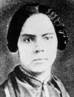

|

|

|
|
|
Born a free African American but compelled by a deeply rooted commitment
to activism on behalf of enslaved people, Mary Ann Shadd Cary is best
known for an extensive body of written work. A teacher, author, activist
and journalist, Cary spoke out on behalf of fugitive slaves and against
both slavery and racism, most famously in the newspaper the
Provincial Freeman.
Firstborn of thirteen children, Mary Ann Shadd spent her earliest
years in Delaware and Pennsylvania. Educated by Quakers and raised Roman
Catholic, Shadd disliked and distrusted organized mainstream religion
because of its role in supporting slavery. In religion, as in everything
else, Shadd believed that African American people should not assimilate,
but rather should develop their own culture while taking full measure of
the opportunities of the nation as a whole.
Shadd was a teacher in several northern cities before she moved with
her brother to Canada West, a common Canadian destination for escaped
slaves. In Canada West, she published a pamphlet, Notes on Canada
West (1852), intended to help fugitive slaves reach Canada and
prosper. Initially, Shadd taught in Canada West. A part of her salary
was supplied by the American Missionary Association, a relationship she
later regretted.
In 1853, Shadd began a career as a writer and editor. Samuel Ringgold
Ward offered her a position with the Provincial Freeman, a
journal written for the men and women of Canada West who had escaped to
freedom. Swiftly, Shadd became editor of the paper, and her writing and
activism made her a spokesperson for fugitive slaves as a whole. Shadd
participated in anti-slavery politics with zest and vigor, wading right
into the often messy fights among different factions. In 1856 she met
and married Thomas G. F. Cary, with whom she had a daughter named Sally
in 1862.
In 1863, Mary Shadd Cary accepted a position as a recruiter of
African-American soldiers, working in Indiana. She moved again when the
conflict ended to Washington, D. C., where she became a public school
principal and a contributor to several African-American papers.
Not content with her considerable accomplishments, Cary joined the
student body of Howard University, pursuing a degree in the law. It was
granted in 1883, when Cary was sixty years old. Although she may have
intended to do so, there is no evidence that she practiced law. Cary
also joined the National Women's Suffrage Association, for which she
returned to Canada in 1881 to organize a suffrage event.
Source: Joan Waugh, ed., Facts on File Encyclopedia of American
History: Civil War and Reconstruction, 1856 to 1869 (New York: Facts on
File, 2003), 52.
|